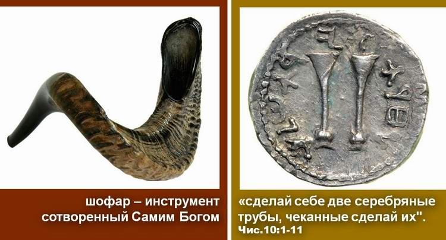
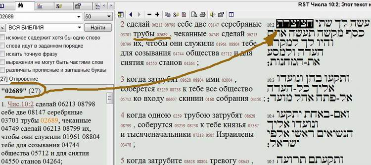
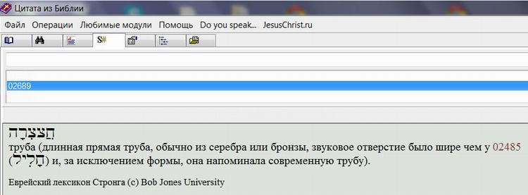
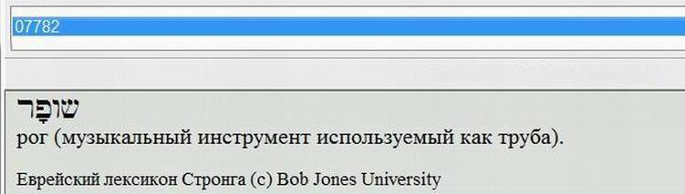
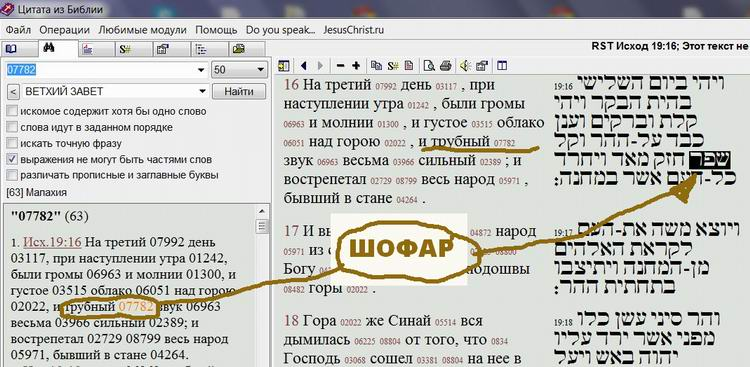

Shofar or Trumpet? Let's Check
Shofar or trumpet? Let's check what the text of Scripture says
Today we are in the middle of the feast of the New Year 5775, which according to the Bible is the Feast of Trumpets. That is what it is called in the Russian Synodal translation of the Bible. Together with all who have doubts, I would like to clear something up!

More and more Christian congregations and individual believers are taking an interest in one of the most Jewish of symbols, the shofar. It must be said that it is also (along with the menorah) the most ancient of Jewish symbols. But the trouble begins if you do not take anyone's word for it and decide to open your Bible to find out what all the fuss is about. The puzzlement starts the moment you begin searching for this very shofar in any of the Russian translations (not that translations into other languages are any different…). You will not find a single mention of the shofar!
Indeed, if you type the word SHOFAR into the search of a Strong's concordance, you will find nothing of the kind in the Russian translation. Naturally the question arises whether the Jewish tradition is right to give the shofar such great importance. Perhaps it is only tradition? Folklore unknown to Holy Scripture?



If we make another attempt and look for the word "TRUMPET" in the text of Scripture, our search will of course be rewarded, and we will find many places containing this word. And of course, even without searching, almost all of us remember the name of the biblical feast, the Feast of Trumpets. It is one of the Feasts of the LORD, for which the whole adult population of Israel made aliyah (went up) to Jerusalem to worship the Most High.
But if we look at the Strong's number of this very word "TRUMPET" and search not by the word but by the number (see the video above for details), it turns out that things are not so simple. In fact it turns out that there are only 27 "pure-blooded" trumpets in the whole text of the Bible, the very ones God commanded Moshe to make of silver in order to call the people together and so on. In most places the translated word "TRUMPET" conceals a real SHOFAR. Which is what we set out to prove.

There are more than twice as many shofars in Scripture as trumpets. Not to mention that the symbolism of the SHOFAR and of the TRUMPET differs considerably (for more on this, see the article "The High Calling" and the film "The Voice of the Shofar").
So what shall we say? It really is useful to look into the original text. Then one can begin to analyse and reflect on the meaning of why this or that word is used.
For more on the symbolism of the SHOFAR and how it differs from the silver trumpet, see the film
"THE VOICE OF THE SHOFAR" (in Russian)
See also the articles on the shofar:
— part 2
— part 3
— part 4
— part 5
And the videos:
Author: Ephraim Kalish
 Different Understandings
Different Understandings His Hands Were Faith (Exod. 17:12)
His Hands Were Faith (Exod. 17:12)